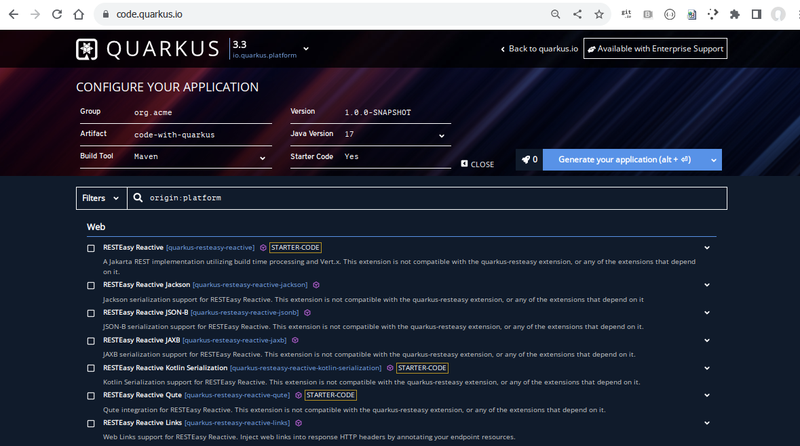
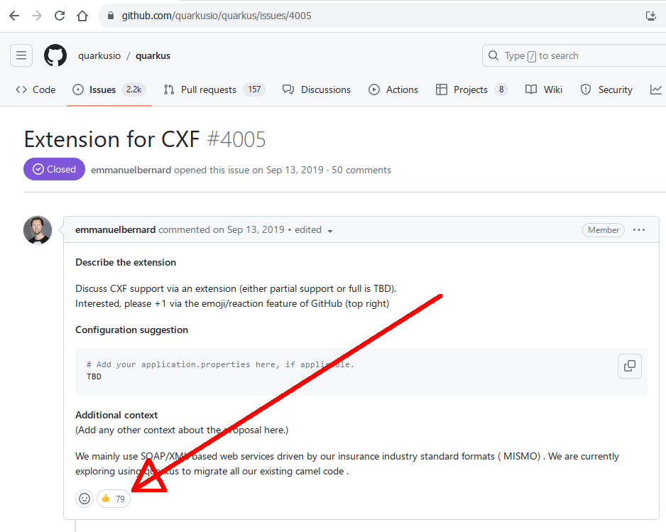
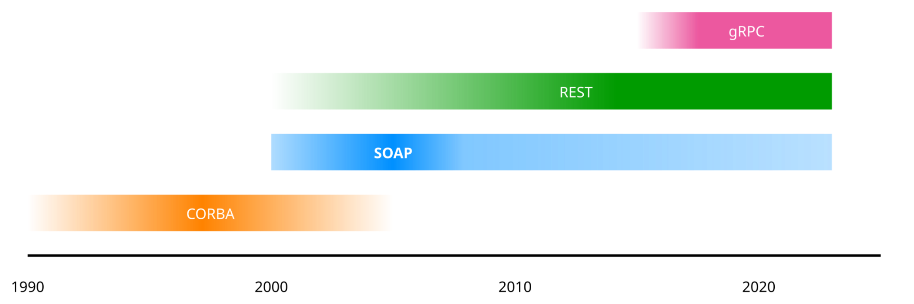

Supersonic subatomic
SOAP
Peter Palaga
*) Oversimplyfied
Augmentation example
@GET
@Path("/orders")
List<Order> getOrders() {
...
}Quarkus extensions
 code.quarkus.ioMost upvoted1 Quarkus issue
github.com/quarkusio/quarkus/issues/4005
1) till it was implemented around 2020
Request-response family
| SOAP | REST |
|---|---|
| HTTP, SMTP, JMS, … | HTTP only |
| Single URL per service | Resources identified by URLs |
| POST only operation encoded in the message |
HTTP methods have special meaning |
| XML only | Typically JSON XML, YAML and others possible |
| WSDL: strict contract | OpenAPI |
SOAP today
Still crucial in
finance, travel, healthcare, government services, etc.
SOAP on Quarkus
The community had to self-organize:
- One guy created a PoC
- Another improved it
- Another gave feedback from using it in production (!)
^ Not enough to support it as a RH product
Test coverage, documentation, productization
Build time class generation & wiring
@WebService(serviceName = "HelloService")
public class HelloServiceImpl implements HelloService {
@WebMethod
public String hello(String greeting, String person) {
return greeting + " " + person + "!";
}
}
Configuration
quarkus.cxf.client.myCalculator.wsdl = http://localhost:8082/calculator-ws/CalculatorService?wsdl
quarkus.cxf.client.myCalculator.client-endpoint-url = http://localhost:8082/calculator-ws/CalculatorService
quarkus.cxf.client.myCalculator.service-interface = com.acme.calculator.CalculatorServiceClient beans
@ApplicationScoped
public class MyBean {
@CXFClient("myCalculator")
CalculatorService calculator;
...
int result = calculator.add(2, 3);
}RH Support
- Via RH Integration since Camel Extensions for Quarkus 2.13.3
- Underway: Non-Camel-related use cases